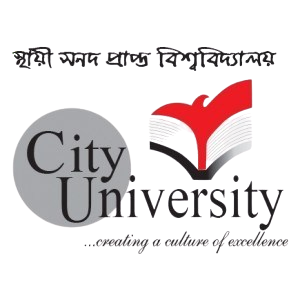

Welcome To City University
About Us
It was in Mid-autumn 2002 that City University started with fifteen students, two departments, meager resources, and a group of dedicated and dynamic teachers. 16 years since 2002, we have now Eight thousand brilliant students, six computer laboratories, two mechanical workshop and laboratories, one digital laboratory, physics and chemistry laboratories, an extensive textile laboratory, ten booming departments (with two other departments in the process of being organized), well-trained teachers, a spirited team of support staff, and a dedicated management group. What started as an experimental project has now been transformed into a prestigious educational institute with a wide range of well educated, both local and global.
City University is serving the interest of the students and the teachers with its well-equipped laboratories, a library with IT-transcription centers (for part-time, on-campus jobs; especially in financial transcription), an upscale cafe, spacious auditorium with surround illumination and sound systems, students’ hostel, and loaded indoor games facilities, complete with billiard and other modern amenities. City University offers scholarships from the Alhaj Mockbul Hossain Foundation for meritorious students as well.
It is not only the physical infrastructure that differentiates City University from the rest of the lot in Dhaka . Rather, it is the cultural and research content that determines the superiority in effort and initiative on the part of the management to compose a “Culture of Excellence” in the campus of City University is culturally intense. Each and every single festival and day is observed with due splendor and color. Students are regularly take part in a host of national and international debates, programming contests, and research workshops. City University proudly hosts five vibrant clubs: Career Development Club, Debating Club, Cultural Club, Sports Club and Magazine Club. The workmanship of our students can not be undermined in any way – especially when this very website is developed for all practical purposes by one of our student named Md. Toufecul Islam.
Behind all the stories of success is a well-coordinated group of dedicated individuals-who have devoted their efforts for the cause of enlightenment the City University Board of Governors. The City University management team consists of Treasurer Md. Majibar Rahman Miah, Vice Chancellor (Acting) Professor Mustafizur Rahman and Others.
The new and permanent campus has started working at Khagan, Savar along with the City Campus in Dhaka.
The authorities of City University involved for the well-being of the students and the University. Some of the programs have already been implemented under the welfare activities :
Educational loan facilities for 10-year-terms
Scholarships for deserving students, and
On-campus, technology-intensive, part-time job facilities for the students, providing.
Financial benefits and educational insights are considered at the same time. It is a firm resolves of the Chairperson that no merit shall be wasted only because of poverty. It is with Pride and Honor that City University marches forward for a better Bangladesh, for a better tomorrow, for an achievement of excellence.